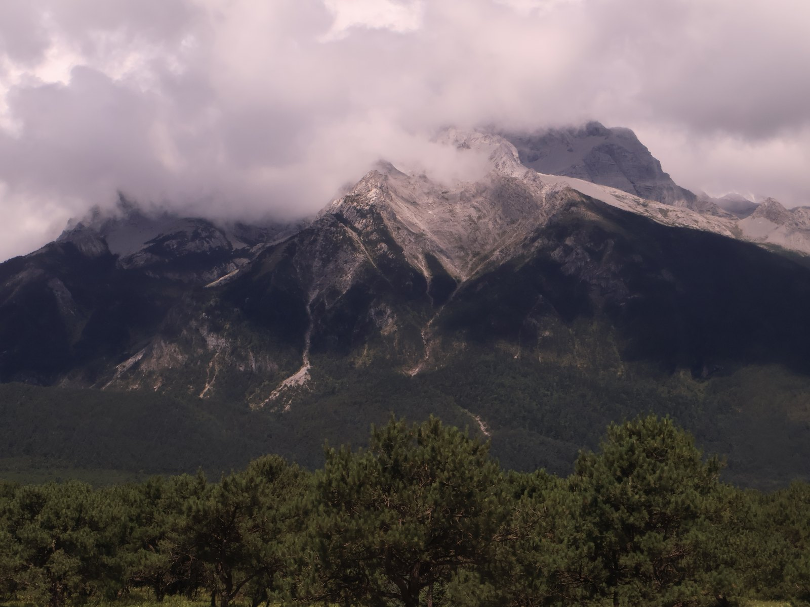
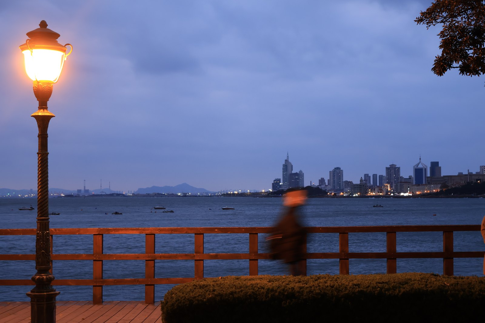

PHOTOGRAPHY PORTFOLIO2020 - 2026
把路过的光，留下来。
城市、海岸与山野之间，一份持续更新的影像档案。
浏览作品
01 城与岸
NOTES ON SEEING
照片不是记录，是我愿意停下来的那一刻。
- 摄影手记
02 夜的光
03 山野与人
补遗
ABOUT THE ARCHIVE
关于这些照片
一份私人影像档案，收录城市天际线、海岸的蓝调时刻，以及远山与草原之间的光。没有主题先行，只是把愿意停下来的瞬间留下来。
照片按系列整理，持续更新。所有影像均为原创，未经授权请勿转载。
CONTACT / github.com/PhyLiusir
